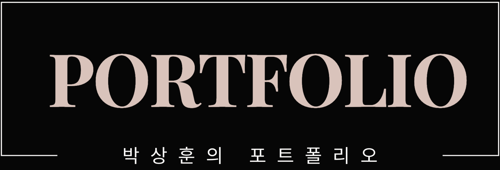
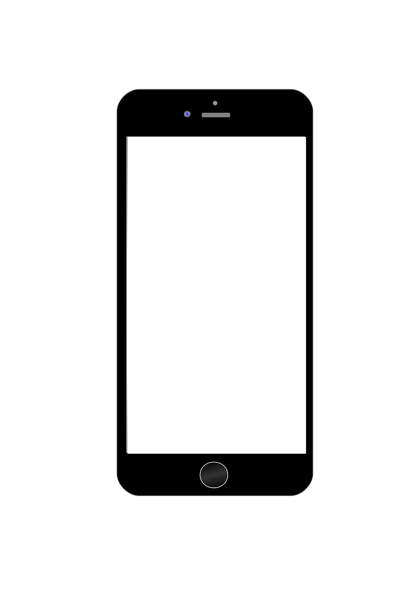

SangHun's Web Portfolio
bp4sp4@naver.com
Active
SangHun's Web Portfolio


#끊임없는! #노력하는! #배움에끝은없다!
안녕하세요! 배움에 겁이 없는
웹 개발자 박상훈입니다!
좋아하는것이기에 재미있게
항상 웹 개발을 진행해왔습니다.
어디에서도 잘 보이는 반응형
웹 접근성과 웹 표준을 고려한 웹 페이지를 그려냅니다.
항상 개발하면서 중요하게 생각하는 팀원간의 의사소통
불통이 아닌! 소통을 중요시하는 개발자입니다.
22.02 | 대림대학교 컴퓨터정보학부 졸업
22.04 | 와이즈스톤티 앱,웹 QA테스터 근무 (21.10 ~ 22.04)
22.05 | 한국 ICT인재개발원 (22.05 ~ 22.12)
23.02 | 새롬정보시스템 AI빅데이터그룹파트원 (23.02 ~ 23.05)


T 멤버십(QA)
*해당 TC는 실제 업무에 사용된 파일이 아닌 임시로 제작된 파일입니다.
와이즈스톤에서 6개월 동안 SKM 1팀의 연구원으로 활동하였습니다. 입사 당시에는 티멤버쉽 앱의 검증을 주도적으로 진행하였습니다.
앱의 출시 당일부터 이후에도 지속적으로 사후 검증을 진행하여 사용자 경험을 개선하고 앱의 안정성을 유지하는 데 기여하였습니다.

테이블링(QA)
*해당 TC는 실제 업무에 사용된 파일이 아닌 임시로 제작된 파일입니다.
와이즈스톤에서 6개월 동안 SKM 1팀의 연구원으로 활동하였습니다. 테이블링 앱/웹 검증을 진행하였습니다.
테이블링 인트로/홈 담당 검증을 마치고, 사장님보드 웹겁증을 진행 했습니다.

Mini Project - 24.03.26 ~ 24.04.02
LostArk-OpenAPI
React
JavaScript
HTML
CSS